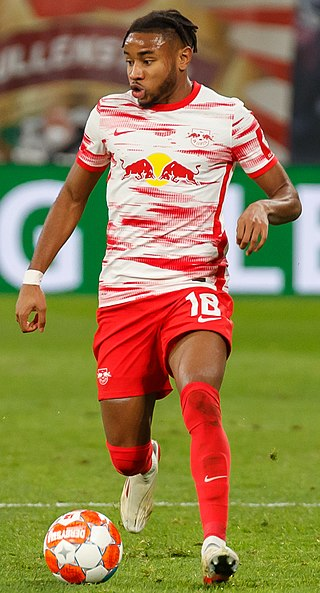
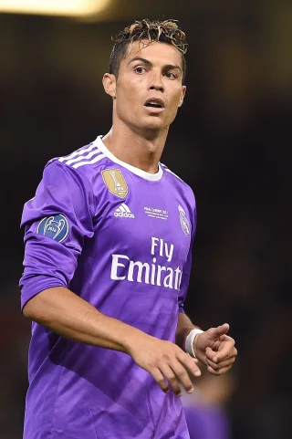
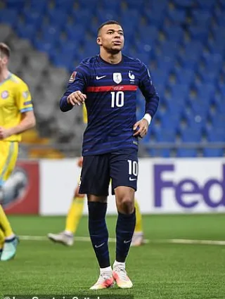

Lionel Messi is mijn lievelingsspeler om meerdere redenen. de eerste reden is, omdat ik hem persoonlijk de beste speler ooit vind. Hij is de beste speler ooit omdat hij zoveel prijzen in zijn carriere heeft gewonnen, en dat niet voor niets. Hij is de speler met de meeste Ballon D'or's ooit. Dat is de prijs voor de beste speler van de wereld van 1 kalenderjaar. Ook ben ik verliefd op zijn speelstijl, hij is zo klein en dribbelt langs het hele team en scoort. Hij heeft FC Barcelona bijna 20 jaar op zijn schouders gedragen en dat allemaal alleen. Ook heeft hij het Argentijnse nationale elftal mee gedragen naar het WK-finale van 2014. hij is zo goed in dribbelen dat het wel lijkt alsof de bal aan zijn voet plakt. Messi is niet eens een spits maar toch is hij wel de beste doelpunten scoorder aller tijden. sinds kort is Lionel Messi naar de Franse club Paris Saint Germain gegaan waar hij nu speelt. persoonlijk was ik daar heel blij mee, omdat PSG mijn favourite club is. Hij had een hele lange tijd de rugnummer 10. daardoor is nummer 10 ook mijn lievelingsgetal. ze noemen Messi ook wel eens de GOAT, dat is de afkorting voor Greatest Of All Time.
2. Cristopher Nkunku

Cristopher Nkunku is mijn tweede lievelingsspeler en ik ga jullie uitleggen waarom. ik denk dat de meeste van jullie hem niet kennen. hij speelt bij de club RB Leipzig en hij staat als middenvelder. soms zet de trainer hem in de aanval. voordat hij bij RB Leipzig speelde speelde hij bij Paris Saint Germain in de jeugd. zijn nationaliteit is Frankrijk. ik vind Nkunku een hele goede speler omdat hij letterlijk alles kan: 'schieten, dribbelen, passen en verdedigen'. dus daarom zou je hem als trainer ook overal kunnen zetten. ik heb hem ontdekt toen hij nog in de jeugd van Paris Saimnt Germain speelde. dat kwam door een filmpje die ik van hem zag dat hij een mooie goal scoorde. dus ik besloot meer filmpjes te kijken en ik kwam erachter dat zijn speelstijl mij wel aansprak. en sinds dien heb ik hem altijd gewaardeerd. zijn rugnummer is 18. ik vind Cristopher Nkunku nu al zo goed, maar hij heeft nog een lange weg te gaan. hij is namelijk nog een jonge speler die nog veel meer kan berijken dan wat hij nu al heeft berijkt. en ik gun hem natuurlijk het beste. ik hoop dat hij ooit net zo een grote speler wordt als Messi en Ronaldo.
3. Cristiano Ronaldo

Cristiano Ronaldo is mijn derde lievelingsspeler. hiervoor heb ik ook genoeg redenen voor. ten eerste vind ik hem natuurlijk een hele goede speler en de meeste van jullie kennen hem denk ik ook wel. hij is namelijk de bekendste voetballer op de wereld. hij heeft een niet normaal hard schot, hij is heel sterk en hij kan net als messi ook heel goed dribbelen, maar Messi kan het toch wel een stuk beter. Ronaldo is de speler die de meeste goals ooit heeft gescoord, dat is echt iets om trots op te zijn. hij heeft ook 5 keer de Ballon D'or gewonnen, 2 keer minder dan messi maar hij staat wel tweede met de meeste Ballon D'or's. ronaldo begon zijn carriè bij Sporting waar hij nog niet bekend was. daarna ging hij naar Munchester United waar hij liet zien waartoe hij in staat was. daarna ging hij naar Real Madrid en daar heeft hij 4 keer de Champions league mee gewonnen. dat is een hele goede prestatie. verder heeft hij ook een paar jaar voor Juventus gespeeld en nu is hij weer terug bij Munchester United. zijn rugnummer is 7, en hij wordt net zoals Messi ook weleens de GOAT genoemd. dat betekend 'Greatest Of All Time'
4. Kylian Mbappe

Mijn vierde lievelingsspeler is Kylian Mbappe. Kylian Mbappe speelt bij Paris Saint Germain. en zoals jullie al weten is Paris Saint Germain mijn favourite club. dat maakt al dat ik heb waardeer. maar wat ik ook mooi vind aan hem is dat hij altijd met een lach het veld op gaat en ook altijd met een lach het veld verlaat. hij is nog een jonge Franse speler, net als Cristopher Nkunku, die nog heel veel kan bereiken in zijn voetbalcarriè. Kylian Mbappe is een Spits die goed is in scoren en hij is vooral goed in sprinten. Kylian Mbappe is een van de snelste speler op de wereld, misschien is hij wel de snelste speler op de wereld. in 2018 heeft Kylian Mbappe met het Franse elftal het Wereld Kampionschap gewonnen als 19 jarige. terwijl Ronaldo en Messi veel langer voetballen, maar ze hebbenm geen een keer het WK gewonnen. Voordat Kylian Mbappe bij Paris Saint Germain speelde, speelde hij bij AS Monaco, waar hij zich als jonge speler had bewezen. zijn rugnummer is 10 en ik hoop dat Kylian Mbappe nog veel gaat bereiken in zijn carrière